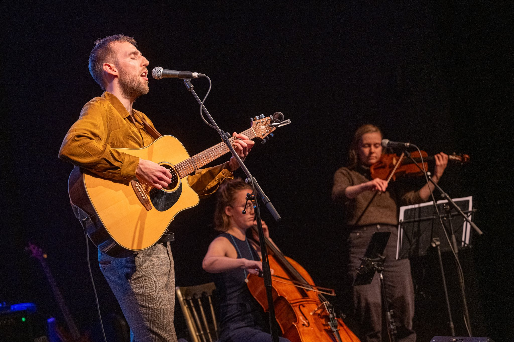
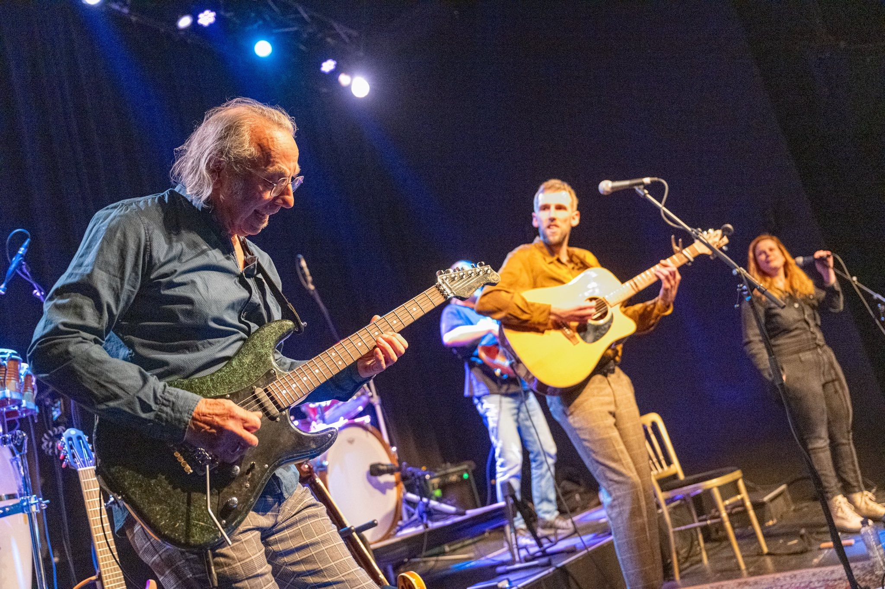
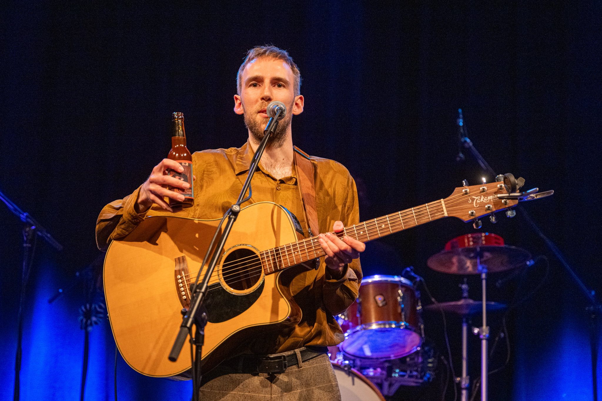
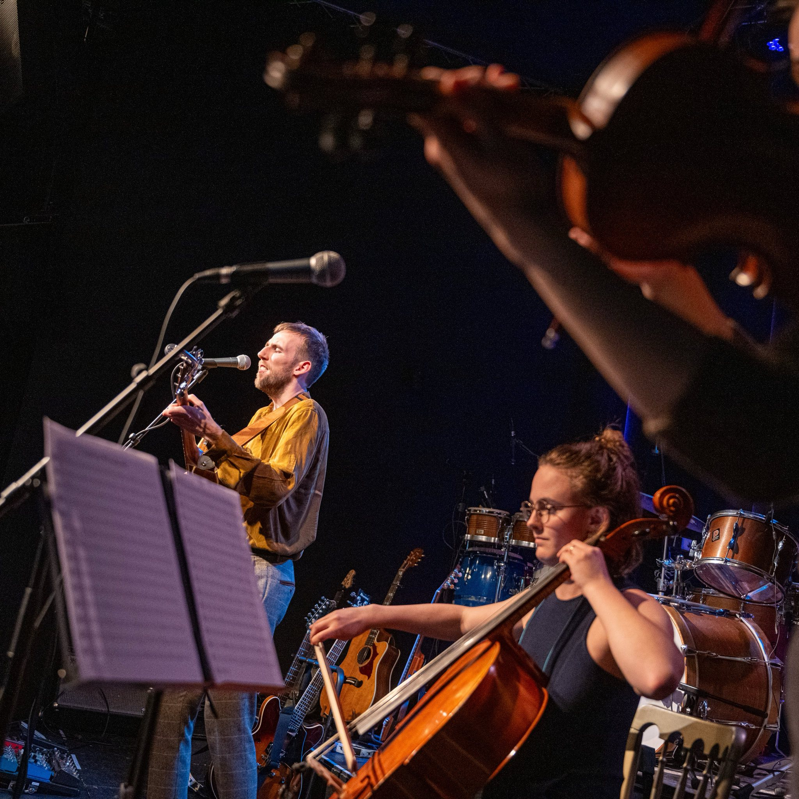
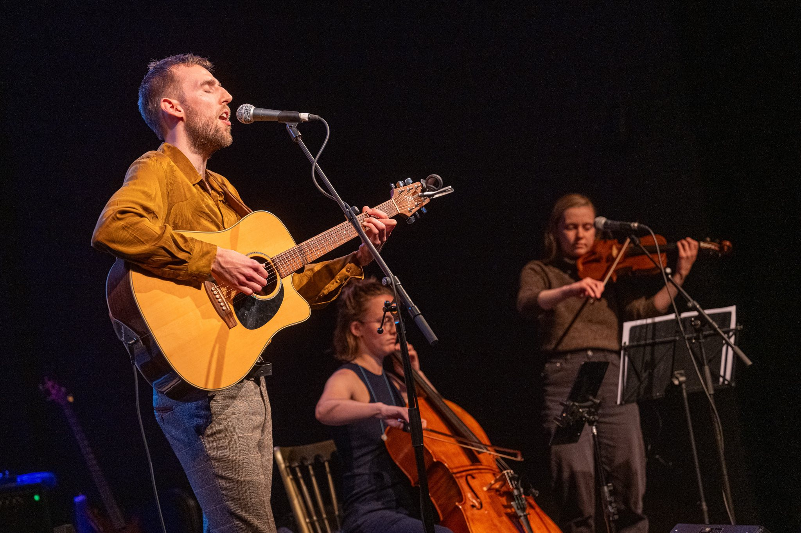
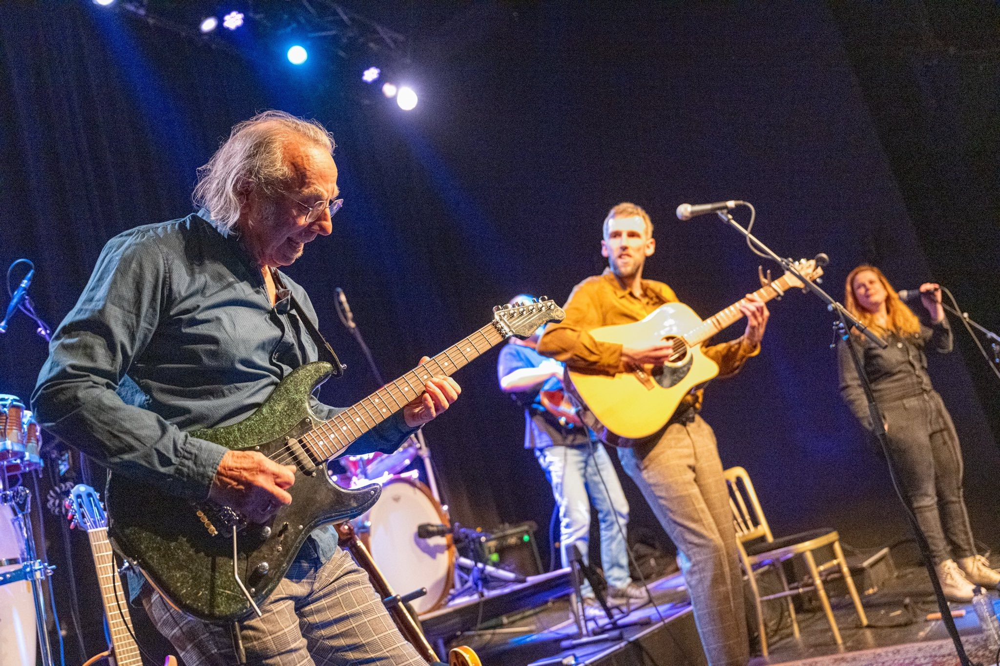
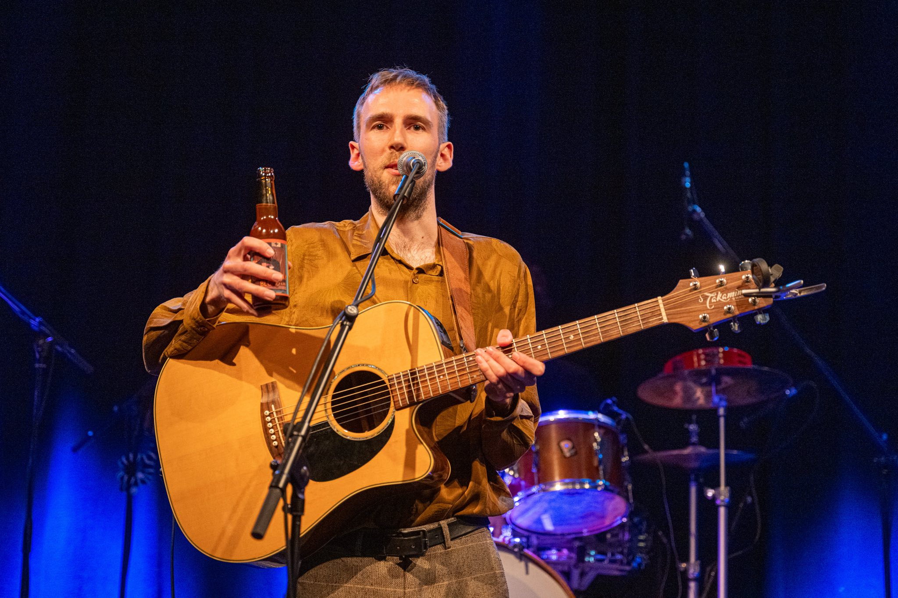
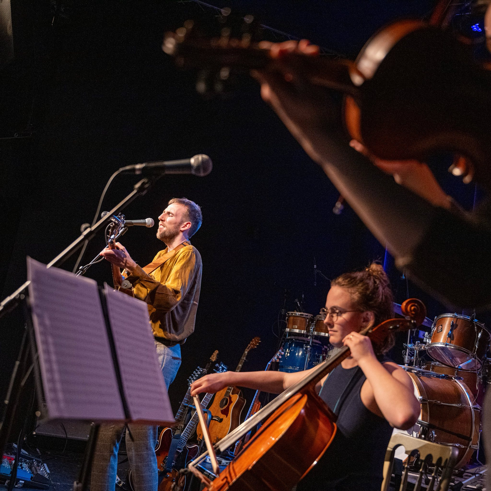

Olmo (Olmo van der Mast, 1995) is een singer-songwriter uit Delft (Nederland). Zijn liedjes variëren van persoonlijke verhalen tot protestsongs. Olmo's muziek is beïnvloed door artiesten als Glen Hansard, Jonathan Jeremiah en Tom Waits en mengt elementen van pop, rock en blues.
In 2014 ontpopte Olmo zich als veelbelovend talent door de eerste editie van Young Quite Quiet te winnen, een contest voor jonge singer-songwriters. Na zijn EP uit 2014, Through This Time, bracht Olmo in april 2025 zijn debuutalbum uit: Break Away. Break Away is een mix van intieme akoestische stukken en levendige bluesrock. Het album is verkrijgbaar op LP en is te streamen op verschillende platforms waaronder Spotify, Apple Music en Youtube Music.
11 april 2025 – Album releaseparty (Rietveld Theater, Delft)
6 juni 2025 – Back to Basis (Delft)
28 februari 2025 – Gluren bij de Buren (Arnhem)
13 september 2025 – GALM (Schiedam)
Subscribe to get the latest news and releases from Olmo

 






